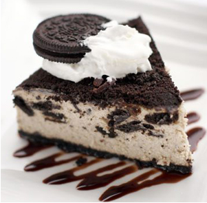

TODO EL CAFE ES 100% MEXICANO
El cafe es mucho más que una bebida, es sin duda uno de los productos más apasionantes que existen.
He aquí un vistazo a las bebidas de café más populares disponibles en las casas de café más exigentes.
CAFE EXPRESO
Expreso es un café negro fuerte hecho forzando vapor a través de oscuro-asado granos de café aromáticos a alta presión en una máquina de café. Un expreso perfectamente preparado tendrá una crema espesa, marrón dorado (espuma) en la superficie. Si la crema es buena, el azúcar se agrega flotará en la superficie durante un par de segundos antes de que se hunde lentamente hasta el fondo.
CAPPUCCINO
Esta bebida de café muy popular se ha convertido en un elemento básico que incluso el más común de los cafés de la esquina lleva (o al menos una versión de la misma). Un verdadero cappuccino es una combinación de partes iguales de espresso, leche al vapor y espuma de leche. Esta bebida de lujo, si se hace correctamente, puede doblar como un postre con sus complejos sabores y la riqueza.
CAFE AMERICANO
Un americano es un solo tiro de expreso añadido a una taza de agua caliente. El nombre se cree que se originó como un poco de un insulto a los estadounidenses, que tuvieron que diluir su expreso cuando se hicieron populares en este lado del charco. Muchas casas de café se han perfeccionado, sin embargo, y el resultado se ha convertido en un cremoso, rico café a base de expreso que se puede disfrutar y saborear antes de saltar en su Vespa y de dirigirse a la cancha de fútbol.
LECHE MANCHADA CON CAFE
Un café con leche es un solo tiro de expreso a tres partes de leche al vapor. A diferencia de otros este se basa en un cafe expreso para su elaboración, y se puede acompañar de pana.
CAFE CON LECHE
Esta bebida tradicional francesa es similar a una leche manchada con cafe, excepto que se hace con café reciénte, en lugar de espresso, en una proporción de 1:1 con leche al vapor. Se considera una forma más débil de la leche manchada con cafe.
MOCACCINO
Se trata de un cappuccino o un café con leche con jarabe de chocolate o en polvo añadido. No puede haber grandes variaciones en exactamente cómo está preparado, así que pregunte a su casa de café cómo lo hacen antes de pedirlo.
CAFE MANCHADO CON CARAMELO
Esta es otra variación que se prepara en un número de maneras por diferentes casas de café. El método más común es la combinación de espresso, caramelo y leche espumada, aunque algunos utilizan la leche al vapor. A menudo, se añade la vainilla para proporcionar un sabor extra.
ESTO ES ALGO DE LO QUE PUEDEN ENCONTRAR AQUI...
Y para acompañar un buen cafe, nunca debe de faltar un buen postre.
CHOCOFLAN
Un clásico con el toque nussett. Delicioso pan de chocolate con cremoso flan horneado, cubierto por el delicioso sabor del caramelo.
HOTCAKES
Unos clásicos Hot Cakes endulzados con caramelo o miel mapple.
CHEESECAKE OREO®

Cremoso pastel de queso con trocitos y base de galleta OREO®.
PASTEL DE FRESA
Esponjoso pan de vainilla bañado en tres leches, cubierto por crema ligeramente endulzada y relleno con deliciosas fresas frescas.
SIEMPRE ALGO BUENO PARA ACOMPAÑAR...
Podrá preferir usted una cosa más bien clásica - desde café con leche hasta un Frapuccino - o una especialidad algo más creativa - aquí encontrará una pequeña selección de diferentes recetas de Café.
FRAPUCCINO DE MOKA
75 minutos
4 porciones
Ingredientes
- 2 taza café expreso o café fuerte (tibio)
- 3 cdas. azucar
- Sirope de chocolate
- 2/3 taza azúcar
- 1/2 taza cacao en polvo sin azúcar
- 1 onza chocolate picado finito
- 1 1/2 cdta. miel
- 1/2 cdta. extracto de vainilla
- Frappe
- 1 taza leche semi-descremada
- Crema chantilly
Pasos
1. Prepara el cafe frio: Agregar el azúcar al cafe hasta que se disuelva y luego dejar enfriar. Vertir el cafe en una cubetera para hacer hielo y congele por unas 3 hrs.
2. Preparar el sirope de chocolate: Combinar el azucar y el cacao en polvo dentro de una olla y agregar lentamente 2/3 de agua caliente, batiendo hasta que el azucar se disuelva (fuego medio/bajo) unos 3 -5 mins.
3. Que no llegue al hervor. Retire del fuego y agregue el chocolate, miel y vainilla. Revuelva bien. Transfiera a un bowl y refrigere hasta que se enfrie.
4. Licue 8 cubitos de cafe, 1/2 taza de leche, 1/3 taza de sirope de chocolate y 1 taza de hielo natural hasta que quede cremoso. Vierta el contenido en 2 vasos y luego repita el proceso para servir 2 vasos mas. Termine con crema chantilly y sirope de chocolate por encima. Disfruten!!!
CAFE EXPRESO
15 minutos
1 porcion
Ingredientes
- Cafe
- Agua
- Azucar
Pasos
1. Ponemos el café en el recipiente o manilla de la cafetera, apretamos bien y el café también lo ponemos muy apretado, presionamos con la cuchara plana y encendemos la cafetera.
2. No dejar que caiga mucho agua, sino se pierde la esencia del expresso.
3. Servir en un taza específica para este café, suelen ser pequeñas y de boca más estrecha. Preparamos el hielo en un vaso. Ponemos el azúcar o edulcorante en la taza con café, movemos y una vez está disuelto lo echamos en el vaso con hielo... listo!!!
CAFE TURCO
Ingredientes
- 1 tz de agua
- 1 cucharada café árabe molido finamente
- 1 pizca cardamomo molido
- Azucar al gusto
Pasos
1. Poner el agua y el azúcar a hervir en el ibrik. Si no tienes un ibrik ponlo en un vaso de peltre o cualquier olla.
2. Retirar del fuego y añadir el café y cardamomo.
Devolver al fuego para calentar y dejar para hervir. Retirar del fuego cuando el café haga espuma. De nuevo, volver al calor a fuego lento, permitiendo que la espuma suba.
Retire del fuego. Y sirve
3. NOTA:
No revolver después de verter en las tazas, ya que la espuma colapsa. Siempre usa agua fría. El ibrik lo pueden comprar en ebay por unos 5 dolares :)
PARA NO SALIR DE CASA...